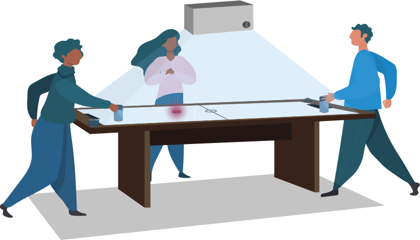
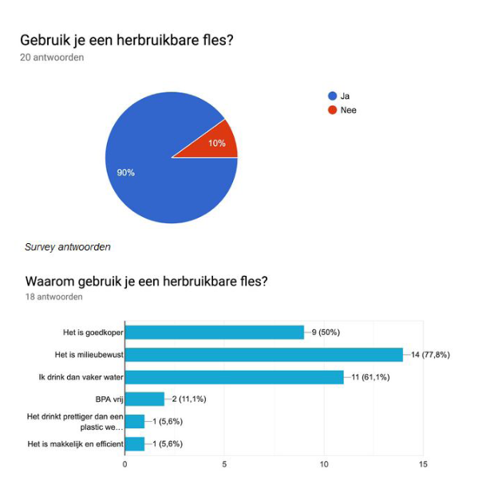
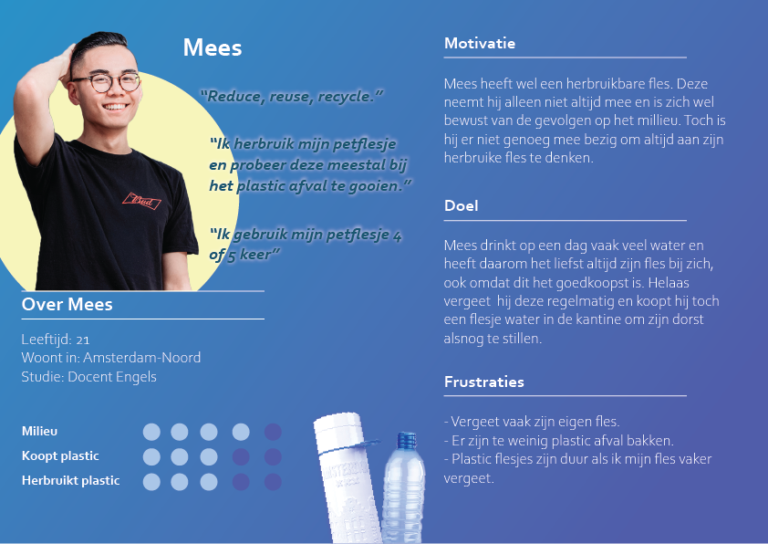
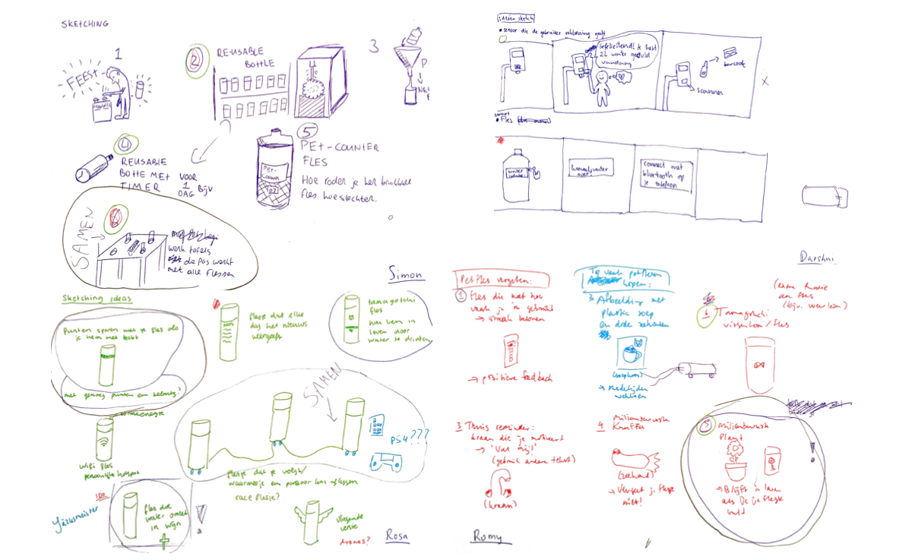
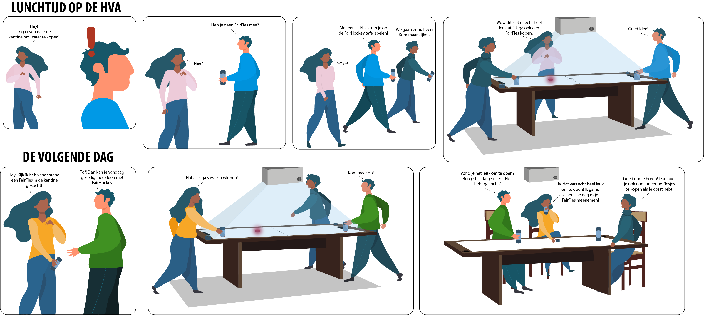

Fair Hockey
This group project lasted a total of 8 weeks and consisted of several courses that connected to it. A very nice team that I felt comfortable working with. For this project we had chosen the case of reducing PET bottles at the AUAS.
Our design challenge: "How can we reduce the use of PET bottles on the HvA Campus?"
For this we have devised an interactive design to support this.
Process
First of all, we researched how often people at the AUAS buy plastic bottles and research into how plastic pollutes the environment.
To map out the target group's wishes, experiences, behavior and goals, we created a persona based on our research.
To visually present the user's experience, we used a customer journey. This was based on our own experience when we forget our bottle of water at home.

In week 4, the group brainstormed together to come up with a number of ideas. The group came up with a number of nice ideas via ideation, of which we have worked out 4 and chosen 1 of them. Critical consideration was also required to determine whether the idea is feasible. In the end we opted for a common table idea that we now want to conceptualize further.
After all the research, we brainstormed together as a group to come up with a number of ideas for the final concept. We have worked out 4 of these and selected 1. We opted for a shared table where the user could connect to his bottle to play a game of AI hockey with his peers. We also had to think carefully about whether the idea is feasible.
How does our concept work?
In the storyboard we visualize how a group of students uses our concept. The students all purchase a fair bottle in which they can drink water and also play air hockey. In this way, the use of PET bottles is reduced.
Product goal
The main goal of the concept is that users can help reduce the use of plastic bottles in a fun way. The user can purchase a recycled water bottle and also play airhockey with their friends.
Final Delivery
For the final delivery, we had to present the process, the prototype and the product video to our coach.